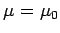
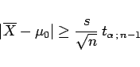

Inhalt Index DeskTop Bronstein

 Wahrscheinlichkeitsrechnung und Mathematische Statistik Mathematische Statistik Wichtige Prüfverfahren
Wahrscheinlichkeitsrechnung und Mathematische Statistik Mathematische Statistik Wichtige Prüfverfahren


Ein statistisches Prüfverfahren hat grundsätzlich folgenden Aufbau:
| Beispiel |
|
Prüfen des Mittelwertes mit der Hypothese H:  bei vorgegebener Irrtumswahrscheinlichkeit |
|  | (16.148) |
ergibt. Man sagt dann, es handelt sich um eine signifikante Abweichung und spricht von Signifikanz.
Weitere Angaben über die Durchführung von Prüfverfahren s. Lit. 16.24.